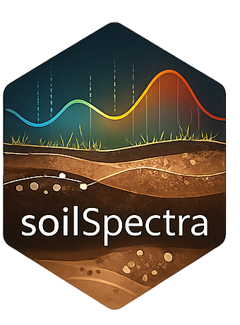

Soil spectral modeling, visualization, and prediction — powered by the Open Soil Spectral Library (OSSL v1.2) and soilVAE asymmetric autoencoders, with sensor-agnostic support for VisNIR and MIR spectroscopy.
Table of Contents
- Overview
- Architecture
- Model Families
- Soil Properties
- Preprocessing Pipeline
- OSSL Data Sources
- Installation
- Quick Start
- Shiny Interface
- Versioning
- Data Citations
- Software Citation
- License
Overview
autoSpectra is an R package and interactive Shiny application for predicting soil physical and chemical properties from diffuse reflectance spectra. It supports two spectral domains:
| Domain | Range | Units | OSSL grid |
|---|---|---|---|
| VisNIR (Visible + Near-Infrared) | 350 – 2500 nm | Reflectance (→ Absorbance) | 1 076 bands at 2 nm |
| MIR (Mid-Infrared) | 600 – 4000 cm⁻¹ | Absorbance | 1 701 bands at 2 cm⁻¹ |
The core predictive model is soilVAE — an asymmetric autoencoder with a dedicated prediction head — trained on data from the Open Soil Spectral Library (OSSL) v1.2. Models are sensor-agnostic: they were trained on contributions from dozens of instruments worldwide, all harmonized to the OSSL standard grid.
Architecture
soilVAE — Asymmetric Autoencoder
The model learns a compact latent representation of the spectrum and simultaneously reconstructs the input and predicts the target soil property. The split design separates the representation task from prediction, reducing overfitting and enabling applicability-domain assessment.
Input spectrum (d_in bands, preprocessed)
│
▼
┌─────────────┐
│ Dense 256 │ ReLU
│ Dense 128 │ ReLU
│ Dense 64 │ ReLU
│ Dense 16 │ ReLU ← Latent space (z)
└──────┬──────┘
│
┌────┴────────────────────┐
│ │
▼ Reconstruction head ▼ Prediction head
Dense 32 Dense 64
Dense d_in (linear) Dropout 5%
↑ MSE loss (w=0.3) Dense 1 (linear)
↑ MSE loss (w=0.3)-
Latent dimension: 16
-
Optimizer: Adam
-
Early stopping: patience = 8 epochs (monitors
val_loss)
- LR reduction: ×0.5 when plateau, patience = 4, min LR = 1×10⁻⁵
Applicability Domain
The latent vectors of the training set define a multivariate Gaussian distribution (μ, Σ). For any new sample, the squared Mahalanobis distance in latent space is compared against the χ² threshold at df = 16, α = 0.05:
D²(z) = (z − μ)ᵀ Σ⁻¹ (z − μ) → D² ≤ χ²(16, 0.95) ≈ 26.3 ✓ in domainConformal prediction intervals (q90, q95 of absolute calibration residuals) are saved alongside each model for uncertainty quantification.
Model Families
autoSpectra ships with 7 model families:
| Family ID | Source | Sensor(s) | Moisture | Spectral range | Bands | Properties |
|---|---|---|---|---|---|---|
OSSL_VisNIR |
OSSL v1.2 | All instruments | Agnostic | 350 – 2500 nm | 1 076 | 34 (L1) |
OSSL_MIR |
OSSL v1.2 | All instruments | Agnostic | 600 – 4000 cm⁻¹ | 1 701 | 34 (L1) |
Agnostic_DRY |
Local | ASD + NaturaSpec + NeoSpectra | DRY | 1350 – 2500 nm | 1 151 | 23 |
Agnostic_Moisture |
Local | ASD + NaturaSpec + NeoSpectra | DRY + 1ML + 3ML | 1350 – 2500 nm | 1 151 | 23 |
ASD_DRY |
Local | ASD FieldSpec | DRY | 350 – 2500 nm | 2 151 | 23 |
NeoSpectra_DRY |
Local | Si-Ware NeoSpectra | DRY | 1350 – 2500 nm | 1 151 | 23 |
NaturaSpec_DRY |
Local | NaturaSpec | DRY | 350 – 2500 nm | 2 151 | 23 |
OSSL families are the recommended choice for new projects. They cover the full breadth of global soil diversity and any VisNIR/MIR instrument.
Soil Properties
OSSL Level-1 Harmonized Properties (34 targets)
| Category | Variable | Unit | Description |
|---|---|---|---|
| Organic | oc |
w.pct | Organic carbon |
c.tot |
w.pct | Total carbon | |
n.tot |
w.pct | Total nitrogen | |
| Texture | clay.tot |
w.pct | Total clay (<0.002 mm) |
silt.tot |
w.pct | Total silt (0.002–0.05 mm) | |
sand.tot |
w.pct | Total sand (0.05–2 mm) | |
| Reaction | ph.h2o |
index | pH in water |
ph.cacl2 |
index | pH in CaCl₂ | |
caco3 |
w.pct | Calcium carbonate | |
acidity |
cmolc/kg | Exchangeable acidity | |
ec |
dS/m | Electrical conductivity | |
| Physical | bd |
g/cm³ | Bulk density |
aggstb |
w.pct | Aggregate stability | |
awc.33.1500kPa |
w.frac | Available water content | |
wr.33kPa |
w.pct | Water retention at 33 kPa | |
wr.1500kPa |
w.pct | Water retention at 1500 kPa | |
| Exchange | cec |
cmolc/kg | Cation exchange capacity |
ca.ext |
mg/kg | Extractable calcium | |
k.ext |
mg/kg | Extractable potassium | |
mg.ext |
mg/kg | Extractable magnesium | |
na.ext |
mg/kg | Extractable sodium | |
| Micronutrients | p.ext |
mg/kg | Extractable phosphorus |
fe.ext |
mg/kg | Extractable iron | |
fe.dith |
w.pct | Crystalline iron (dithionite) | |
fe.ox |
w.pct | Amorphous iron (oxalate) | |
al.ext |
mg/kg | Extractable aluminum | |
al.ox |
w.pct | Amorphous aluminum | |
al.dith |
w.pct | Crystalline aluminum | |
mn.ext |
mg/kg | Extractable manganese | |
zn.ext |
mg/kg | Extractable zinc | |
cu.ext |
mg/kg | Extractable copper | |
b.ext |
mg/kg | Extractable boron | |
s.tot |
w.pct | Total sulfur | |
s.ext |
mg/kg | Extractable sulfur |
Preprocessing Pipeline
The canonical two-step Savitzky-Golay pipeline is applied to all spectra before training or prediction. The steps differ by spectral domain:
VisNIR (reflectance input) MIR (absorbance input)
───────────────────────────── ───────────────────────────
Raw reflectance R ∈ [0,1] Raw absorbance A
│ │
▼ │
A = −ln(R) (absorbance) │
│ │
▼ ▼
SG smooth [ window=23, poly=2, d=0 ] SG smooth [ window=23, poly=2, d=0 ]
│ │
▼ ▼
SG 1st deriv [ window=23, poly=2, d=1 ]SG 1st deriv [ window=23, poly=2, d=1 ]
│ │
▼ ▼
Model input (1 076 features) Model input (1 701 features)Window size: The Savitzky-Golay half-window
m = 11gives a total window of 2×11+1 = 23 points.
The two-step approach (smooth first, then derivative) provides cleaner noise removal compared to a single-pass derivative filter.
Encoded as pipeline strings in model_registry:
# VisNIR
preprocess = c("ABSORBANCE", "SG_SMOOTH(11,2)", "SG_DERIV(11,2,1)")
# MIR
preprocess = c("SG_SMOOTH(11,2)", "SG_DERIV(11,2,1)")OSSL Data Sources
All OSSL v1.2 data are publicly available under CC-BY 4.0.
| Component | File | URL |
|---|---|---|
| VisNIR spectra (L0) | ossl_visnir_L0_v1.2.csv.gz |
https://storage.googleapis.com/soilspec4gg-public/ossl_visnir_L0_v1.2.csv.gz |
| MIR spectra (L0) | ossl_mir_L0_v1.2.csv.gz |
https://storage.googleapis.com/soilspec4gg-public/ossl_mir_L0_v1.2.csv.gz |
| Soil lab data (L1) | ossl_soillab_L1_v1.2.csv.gz |
https://storage.googleapis.com/soilspec4gg-public/ossl_soillab_L1_v1.2.csv.gz |
| Combined (all) | ossl_all_L1_v1.2.csv.gz |
https://storage.googleapis.com/soilspec4gg-public/ossl_all_L1_v1.2.csv.gz |
The ossl_download() function handles fetching and local caching automatically:
ossl_download() # downloads VisNIR + MIR + soillab (~2 GB total)
ossl_download("visnir") # VisNIR only
ossl_download("mir") # MIR onlyOSSL harmonization levels
| Level | Description |
|---|---|
| L0 | Original values as contributed by each dataset |
| L1 | Harmonized to common units, outlier-filtered, consistent naming |
autoSpectra uses L0 spectra (original reflectance/absorbance) and L1 soil lab (harmonized properties). The spectral preprocessing (absorbance conversion + two-step SG) is applied within the package rather than relying on pre-processed OSSL spectra.
Installation
From GitHub (recommended)
# Install devtools if needed
install.packages("devtools")
# Install autoSpectra
devtools::install_github("HugoMachadoRodrigues/autoSpectra")Dependencies
| Package | Role | Install |
|---|---|---|
shiny, shinyWidgets
|
Interactive interface | CRAN |
ggplot2 |
Visualization | CRAN |
prospectr |
Savitzky-Golay filter | CRAN |
keras + tensorflow
|
soilVAE training & inference | See below |
httr |
OSSL data download | CRAN |
data.table |
Fast CSV loading | CRAN |
readxl, writexl
|
Excel I/O | CRAN |
DT, jsonlite
|
Tables & JSON | CRAN |
Setting up Keras/TensorFlow (required for model training and prediction):
install.packages("keras")
keras::install_keras() # installs TensorFlow in a virtualenvQuick Start
1. Download OSSL data and train models
library(autoSpectra)
# Download OSSL v1.2 data (~2 GB, cached locally)
ossl_download()
# Train soilVAE models for all 34 properties × VisNIR
train_ossl_models("OSSL_VisNIR")
# Train soilVAE models for all 34 properties × MIR
train_ossl_models("OSSL_MIR")Or run the bundled script from the project root:
2. Predict from new spectra (programmatic)
library(autoSpectra)
# Load your spectral data (Soil_ID column + numeric wavelength columns)
df <- readxl::read_excel("my_spectra.xlsx")
# Predict with the OSSL VisNIR agnostic model
results <- predict_soil(df, family_id = "OSSL_VisNIR",
properties = c("oc", "clay.tot", "ph.h2o"))
print(results)
# Check applicability domain for organic carbon
app <- predict_applicability(df, "OSSL_VisNIR", "oc")
plot_applicability(app)
# Plot spectra
plot_spectra(df, family = get_family("OSSL_VisNIR"))Shiny Interface
The app provides a four-tab workflow:
| Tab | Description |
|---|---|
| Preview | Summary info about the uploaded file and detected spectral columns |
| Spectrum viewer | Per-sample spectral plot with model grid overlay |
| Mean spectrum | Mean ± SD ribbon across all uploaded samples |
| Predictions | Table of predicted soil properties, downloadable as Excel |
Supported upload formats: .xlsx, .xls, .csv
Expected file format:
Soil_ID | 350 | 352 | 354 | ... | 2500
---------|------|------|------|-----|------
Sample_1 | 0.12 | 0.13 | 0.14 | ... | 0.08
Sample_2 | 0.18 | 0.19 | 0.20 | ... | 0.11Column headers must be the wavelength/wavenumber positions (numeric). The
Soil_IDcolumn name is configurable in the sidebar.
Versioning
v0.2.0 — 2026-03-13 (current)
Major: R package + OSSL integration
- Converted from standalone Shiny app to a proper R package
- Added OSSL v1.2 data download and integration (
ossl_download(),ossl_prepare()) - New model families:
OSSL_VisNIR(350–2500 nm) andOSSL_MIR(600–4000 cm⁻¹) - Expanded to 34 OSSL L1 soil properties (was 23 local properties)
-
Two-step SG preprocessing: separated smooth pass (
SG_SMOOTH) and derivative pass (SG_DERIV) for explicit control - Added MIR support throughout (app, training, prediction)
- Added
predict_applicability()for Mahalanobis applicability domain - Added
plot_applicability(),plot_mean_spectrum(),plot_predictions()visualization functions - Backward compatible: all local families (ASD, NeoSpectra, NaturaSpec) still work
v0.1.0 — 2025
Initial release: Shiny application
- Interactive Shiny app for soil spectral prediction
-
5 local model families:
ASD_DRY,NeoSpectra_DRY,NaturaSpec_DRY,Agnostic_DRY,Agnostic_Moisture - 23 soil properties (local training data)
- Preprocessing: Reflectance → Absorbance → SG(11, 2, 1st derivative)
- soilVAE asymmetric autoencoder architecture
- Conformal prediction intervals (q90, q95)
- Excel and CSV upload, prediction download
Data Citations
If you use autoSpectra with OSSL data, please cite:
Open Soil Spectral Library (OSSL)
@article{Safanelli2023,
title = {Open Soil Spectral Library},
author = {Safanelli, José Lucas and Hengl, Tomislav and
Parente, Leandro and Minarik, Robert and
Bloom, David E. and Todd-Brown, Katherine and
Gholizadeh, Asa and others},
journal = {Earth System Science Data},
year = {2023},
doi = {10.5194/essd-15-3829-2023},
url = {https://docs.soilspectroscopy.org}
}Software Citation
If you use autoSpectra in your research, please cite:
@software{Rodrigues2026autoSpectra,
title = {autoSpectra: Soil Spectral Modelling, Visualization and Prediction},
author = {Rodrigues, Hugo},
year = {2026},
version = {0.2.0},
doi = {10.5281/zenodo.XXXXXXX},
url = {https://github.com/HugoMachadoRodrigues/autoSpectra},
license = {MIT},
note = {ORCID: 0000-0002-8070-8126}
}A formatted citation is also available via
citation("autoSpectra")in R.
Contributing
Contributions are welcome! To add a new model family, extend the model_registry in R/registry.R. To report bugs or request features, please open an issue on GitHub.
License
MIT © 2025–2026 Hugo Rodrigues. See LICENSE.
The OSSL data accessed by this package is distributed under CC-BY 4.0.

Made with ❤️ and 🌱 soil science · @Hugo_MRodrigues